Miembros del Santo Sínodo
Nuestro Arzobispo Primado y el gobierno de la Iglesia en el Perú.
Autoridades de la Iglesia
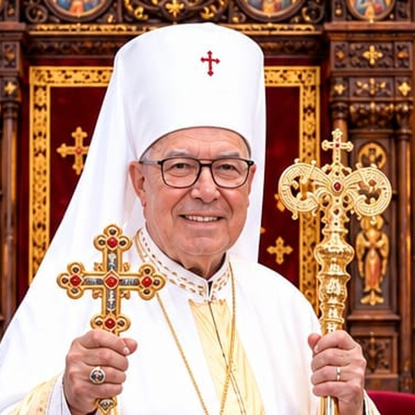
Su Santidad el Patriarca Nicolás I
Consejero Espiritual

Su Beatitud Francisco Ángel Ernesto Morán Vidal
Arzobispo Metropolitano, Primado y Presidente del Santo Sínodo de Obispos Mundial
Guía y gobierna la Iglesia con paternal solicitud, conforme a sus estatutos y normas internas.
Miembros del consejo permanente
Principales cargos de gobierno de la Iglesia en el Perú.
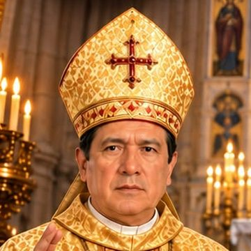
Vicario General · Secretario General del CEPLA
Presidente de la Comisión Episcopal de Formación Permanente y Catequética
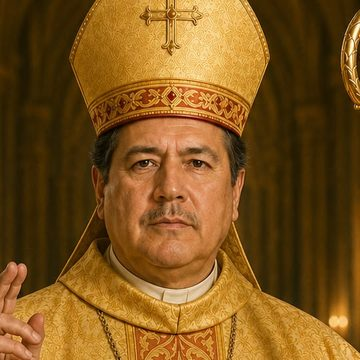
Gran Canciller · Segundo Vicepresidente del CEPLA
Presidente del Tribunal Eclesiástico · Comisión de Derecho Canónico y Disciplina Eclesiástica
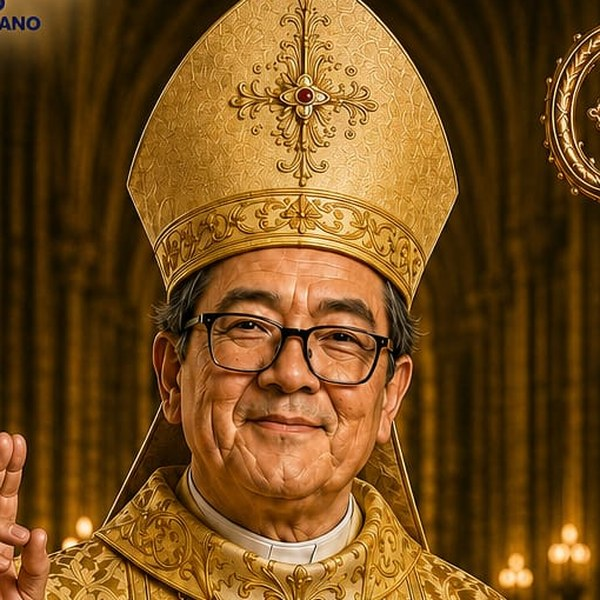
Consejero
Presidente de la Comisión de Clero, Vida Consagrada y Diaconado
Miembros del Santo Sínodo Mundial
Obispos que, en comunión con la ICAOP, integran el Santo Sínodo de Obispos Mundial.
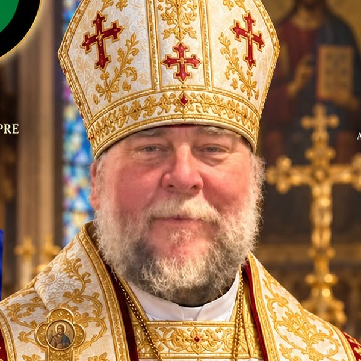
Arzobispo de Australia y Filipinas
Presidente de la Comisión de Santos, Causas de Canonización y Reliquias
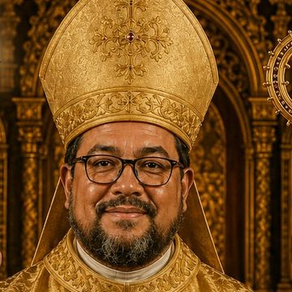
Arzobispo de New Jersey, Estados Unidos
Presidente de la Comisión Episcopal de Asuntos Internacionales y Diplomáticos
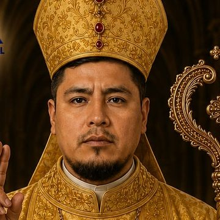
Obispo Auxiliar · Vicario del Estado Plurinacional de Bolivia
Presidente de la Comisión de Fe, Doctrina y Ecumenismo
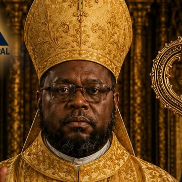
Obispo de la Provincia Sureste
Presidente de la Comisión de Familia, Juventud y Laicos
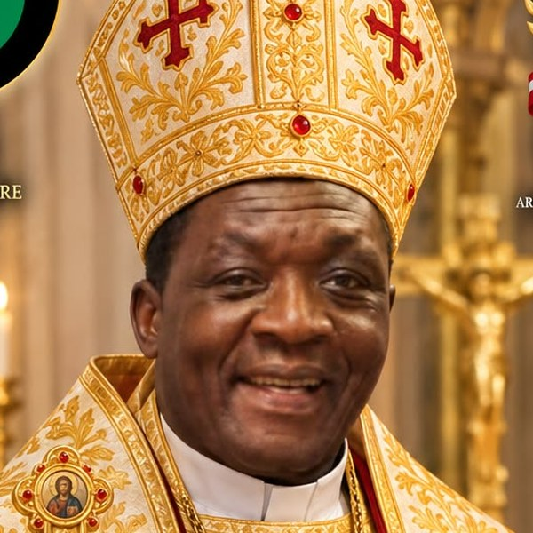
Obispo de Uganda
Presidente de la Comisión de Misión, Evangelización y Expansión Mundial
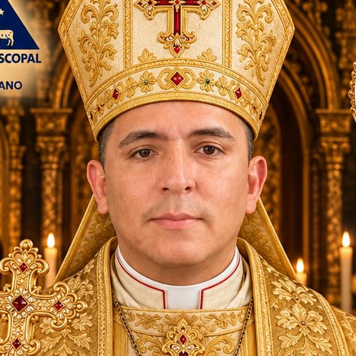
Obispo Vicario de la República de Colombia y Venezuela
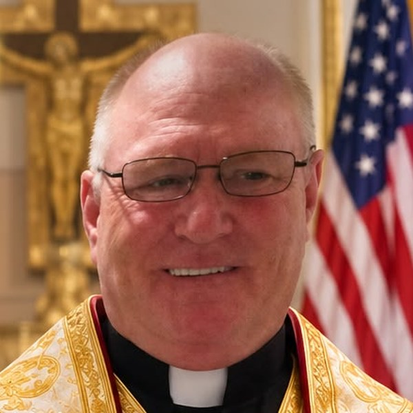
Cura epíscopo · Capellán de la Marina de los Estados Unidos
Presidente de la Comisión de Santos, Causas de Canonización y Reliquias
Para conocer los fundamentos espirituales y jurídicos de este gobierno, visita Nosotros → Gobierno.